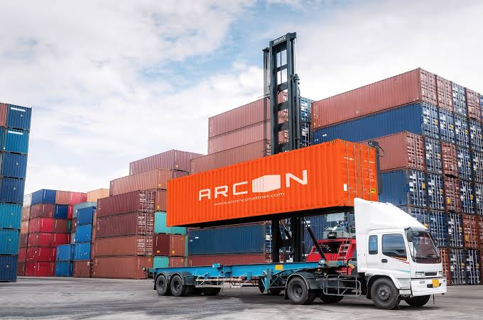

ご希望の車両についてお問い合わせください。
車両価格・輸送費を含めたお見積りをご案内します。
契約後、お支払いを確認いたします。
コンテナまたはRORO船で安全に輸出します。
高品質な日本の中古車を、安全・安心にスリランカへお届けします。
CDL JAPANは現在、スリランカ向け中古車輸出サービスを中心に展開しております。 今後は、お客様のニーズに合わせてアジア・アフリカ・中東など、 世界各国への輸出サービス拡大を目指しております。
今後対応予定
今後対応予定
今後対応予定
CDL JAPANは現在スリランカへの輸出を行っております。 今後は世界各国へサービスを拡大してまいります。

CDL JAPANでは、
コンテナ輸送・RORO船輸送の両方に対応
しております。
日本から世界各国へ、 安全・迅速に車両をお届けいたします。
A. はい。CDL JAPANでは、日本からスリランカへの中古車輸出サービスを提供しております。
A. 軽自動車、セダン、SUV、バンなど、さまざまな中古車の輸出に対応しております。
A. 車両の種類や台数に応じて、RORO船またはコンテナ輸送をご案内しております。
A. はい。お見積りは無料です。お気軽にお問い合わせください。
A. 必要書類は車両や手続きによって異なります。詳しくは当社スタッフが丁寧にご案内いたします。
CDL JAPANをご利用いただいたお客様からの声をご紹介します。
とても丁寧に対応していただき、 安心してスリランカへ輸出することができました。
車の状態も良く、 書類手続きもスムーズでした。
スタッフの対応が親切で、 最後まで安心して取引できました。